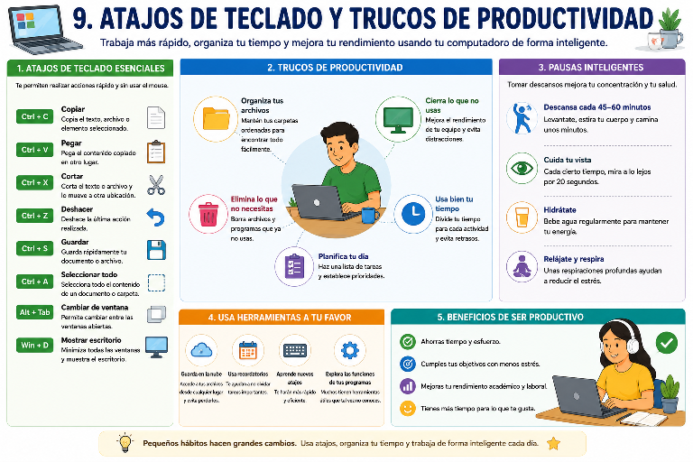

ARTÍCULO TÉCNICO
Atajos de teclado y trucos de productividad
Introducción
9. ATAJOS DE TECLADO Y TRUCOS DE PRODUCTIVIDAD
Los atajos de teclado son combinaciones de teclas que permiten realizar diferentes acciones de manera más rápida sin necesidad de utilizar el mouse. Actualmente, muchas personas usan el computador para estudiar, trabajar, investigar y realizar tareas, por lo que aprender algunos atajos puede ahorrar tiempo y facilitar el desarrollo de las actividades diarias. Aunque al principio puede parecer difícil recordarlos, con la práctica se convierten en una herramienta muy útil para trabajar de una forma más rápida y organizada.

Uno de los atajos más utilizados es Ctrl + C, que sirve para copiar un texto, una imagen o un archivo, y Ctrl + V, que permite pegar ese contenido en otro lugar. También existe el atajo Ctrl + X, que se utiliza para cortar un archivo o un texto y moverlo a otra ubicación. Otro muy importante es Ctrl + Z, que permite deshacer la última acción realizada cuando se comete un error. Estos comandos son muy utilizados en programas de oficina, navegadores y muchas otras aplicaciones.
Otro atajo bastante útil es Ctrl + S, que permite guardar rápidamente un documento mientras se está trabajando. Utilizar esta combinación de teclas con frecuencia ayuda a evitar la pérdida de información en caso de que el computador se apague inesperadamente o presente algún problema. También es muy práctico Ctrl + A, que sirve para seleccionar todo el contenido de un documento o una carpeta, facilitando el trabajo cuando se necesita copiar, mover o eliminar varios archivos al mismo tiempo.
Además de los atajos de teclado, existen algunos trucos de productividad que ayudan a aprovechar mejor el tiempo. Uno de ellos es mantener organizadas las carpetas y los archivos para encontrarlos fácilmente cuando sean necesarios. También es recomendable cerrar los programas que no se están utilizando, ya que esto mejora el rendimiento del computador y evita distracciones mientras se realizan las actividades. Mantener el escritorio ordenado y eliminar accesos directos que ya no se usan también facilita el trabajo diario.
Otro hábito que mejora la productividad es planificar las actividades antes de comenzar a trabajar. Elaborar una lista con las tareas más importantes permite organizar mejor el tiempo y cumplir los objetivos de manera más eficiente. También es recomendable realizar primero las